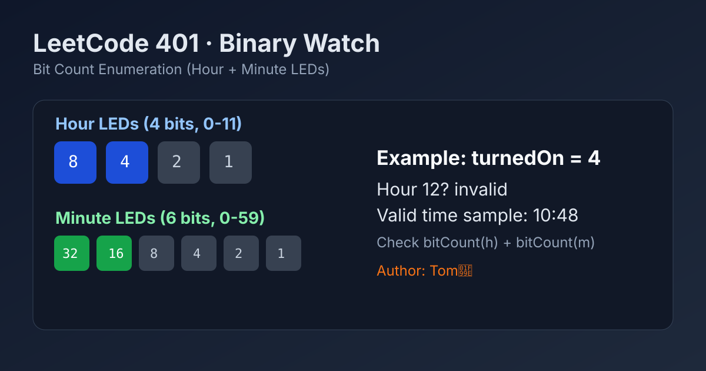

LeetCode 401: Binary Watch (Bit Count Enumeration for Hour/Minute Split)
LeetCode 401Bit ManipulationEnumerationTime FormattingToday we solve LeetCode 401 - Binary Watch.
Source: https://leetcode.com/problems/binary-watch/

English
Problem Summary
A binary watch has 4 LEDs for hours (0-11) and 6 LEDs for minutes (0-59). Given turnedOn, return all possible times where exactly that many LEDs are on.
Key Insight
Brute-force over all legal hour/minute pairs is tiny: only 12 * 60 = 720 states. For each pair, keep it if bitCount(hour) + bitCount(minute) == turnedOn.
Brute Force and Limitations
Trying to directly generate LED combinations is possible but more error-prone because you still need to validate hour/minute ranges and format strings. Enumerating valid times first is simpler and interview-safe.
Optimal Algorithm Steps
1) Initialize empty answer list.
2) For each hour in [0, 11] and minute in [0, 59], compute set bits.
3) If total set bits equals turnedOn, format as H:MM (minute must be 2 digits).
4) Append to answer list and return it.
Complexity Analysis
Time: O(12 * 60), effectively constant.
Space: O(k) for output size.
Common Pitfalls
- Forgetting minute zero-padding (3:07, not 3:7).
- Using hour range 0-15 instead of 0-11.
- Using minute range 0-63 instead of 0-59.
- Returning duplicates from combination-based generation.
Reference Implementations (Java / Go / C++ / Python / JavaScript)
class Solution {
public List<String> readBinaryWatch(int turnedOn) {
List<String> ans = new ArrayList<>();
for (int h = 0; h < 12; h++) {
for (int m = 0; m < 60; m++) {
if (Integer.bitCount(h) + Integer.bitCount(m) == turnedOn) {
ans.add(h + ":" + (m < 10 ? "0" : "") + m);
}
}
}
return ans;
}
}func readBinaryWatch(turnedOn int) []string {
ans := make([]string, 0)
for h := 0; h < 12; h++ {
for m := 0; m < 60; m++ {
if bits.OnesCount(uint(h))+bits.OnesCount(uint(m)) == turnedOn {
ans = append(ans, fmt.Sprintf("%d:%02d", h, m))
}
}
}
return ans
}class Solution {
public:
vector<string> readBinaryWatch(int turnedOn) {
vector<string> ans;
for (int h = 0; h < 12; ++h) {
for (int m = 0; m < 60; ++m) {
if (__builtin_popcount(h) + __builtin_popcount(m) == turnedOn) {
ans.push_back(to_string(h) + ":" + (m < 10 ? "0" : "") + to_string(m));
}
}
}
return ans;
}
};class Solution:
def readBinaryWatch(self, turnedOn: int) -> List[str]:
ans = []
for h in range(12):
for m in range(60):
if h.bit_count() + m.bit_count() == turnedOn:
ans.append(f"{h}:{m:02d}")
return ansvar readBinaryWatch = function(turnedOn) {
const bitCount = (x) => x.toString(2).split('').filter(ch => ch === '1').length;
const ans = [];
for (let h = 0; h < 12; h++) {
for (let m = 0; m < 60; m++) {
if (bitCount(h) + bitCount(m) === turnedOn) {
ans.push(`${h}:${m.toString().padStart(2, '0')}`);
}
}
}
return ans;
};中文
题目概述
二进制手表用 4 个 LED 表示小时（0-11），6 个 LED 表示分钟（0-59）。给定 turnedOn，返回所有恰好点亮这么多 LED 的合法时间。
核心思路
直接枚举所有合法时间组合即可：总共只有 12 * 60 = 720 种。判断条件是 bitCount(hour) + bitCount(minute) == turnedOn。
暴力解法与不足
也可以从“选哪些 LED 亮”去组合生成，但实现会更绕，还要额外过滤非法小时/分钟并处理格式；面试中通常不如直接枚举合法时间直观。
最优算法步骤
1）初始化答案数组。
2）枚举 hour 从 0 到 11、minute 从 0 到 59。
3）若两者二进制 1 的个数之和等于 turnedOn，按 H:MM 格式加入答案。
4）遍历结束后返回答案。
复杂度分析
时间复杂度：O(12 * 60)，常数级。
空间复杂度：O(k)（答案列表大小）。
常见陷阱
- 分钟未补零（应为 3:07，不是 3:7）。
- 小时枚举写成 0-15。
- 分钟枚举写成 0-63。
- 组合生成时出现重复结果。
多语言参考实现（Java / Go / C++ / Python / JavaScript）
class Solution {
public List<String> readBinaryWatch(int turnedOn) {
List<String> ans = new ArrayList<>();
for (int h = 0; h < 12; h++) {
for (int m = 0; m < 60; m++) {
if (Integer.bitCount(h) + Integer.bitCount(m) == turnedOn) {
ans.add(h + ":" + (m < 10 ? "0" : "") + m);
}
}
}
return ans;
}
}func readBinaryWatch(turnedOn int) []string {
ans := make([]string, 0)
for h := 0; h < 12; h++ {
for m := 0; m < 60; m++ {
if bits.OnesCount(uint(h))+bits.OnesCount(uint(m)) == turnedOn {
ans = append(ans, fmt.Sprintf("%d:%02d", h, m))
}
}
}
return ans
}class Solution {
public:
vector<string> readBinaryWatch(int turnedOn) {
vector<string> ans;
for (int h = 0; h < 12; ++h) {
for (int m = 0; m < 60; ++m) {
if (__builtin_popcount(h) + __builtin_popcount(m) == turnedOn) {
ans.push_back(to_string(h) + ":" + (m < 10 ? "0" : "") + to_string(m));
}
}
}
return ans;
}
};class Solution:
def readBinaryWatch(self, turnedOn: int) -> List[str]:
ans = []
for h in range(12):
for m in range(60):
if h.bit_count() + m.bit_count() == turnedOn:
ans.append(f"{h}:{m:02d}")
return ansvar readBinaryWatch = function(turnedOn) {
const bitCount = (x) => x.toString(2).split('').filter(ch => ch === '1').length;
const ans = [];
for (let h = 0; h < 12; h++) {
for (let m = 0; m < 60; m++) {
if (bitCount(h) + bitCount(m) === turnedOn) {
ans.push(`${h}:${m.toString().padStart(2, '0')}`);
}
}
}
return ans;
};
Comments